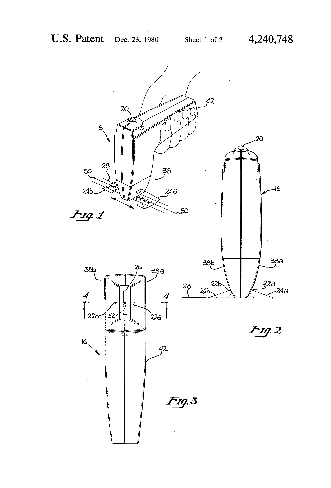
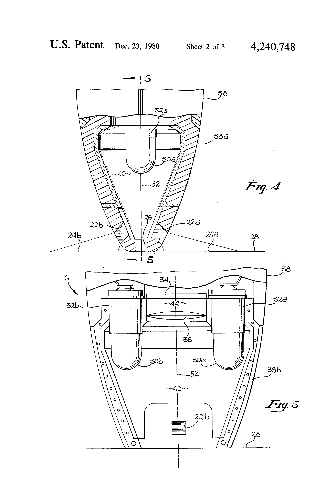

Caere Hand-held OCR Wand with Visual Aligner (1980)
An OCR wand that projects a light pattern to guide your hand — read only when your sweep is geometrically perfect

Overview
The Caere Hand-held OCR Wand with Visual Aligner, patented in 1980 (US 4,240,748, filed 1978), is a hand-swept optical character recognition wand that projects a symmetrical trapezoidal light pattern onto the paper surface as the operator drags it across printed characters. The projected light pattern serves as a real-time visual alignment guide: it remains symmetric only when the wand is held at the correct height, centered over the text, and at the proper angle. If the operator tilts the wand left or right, holds it too high or too low, or skews it, the projected pattern becomes asymmetric — a visible signal that the sweep is outside the machine's reading tolerances.
This turns the act of reading printed characters into a continuous physical calibration loop. The human watches the light pattern; the machine reads only when the geometry is correct. The operator must learn to hold a steady, level, centered sweep — a skill that develops over time, much like learning to use a pen or a tool. The wand's photodiode array and lens system capture reflected light from the characters, and the circuitry compensates for variations in sweep velocity, skew, and depth of field — but the basic alignment feedback is visual and physical, mediated by the projected light itself.
Caere Corporation, founded in 1976 in Los Gatos, California, was an early leader in OCR technology. The company's wands and OCR systems were used in retail, inventory, and data entry contexts. The visual-aligner patent represents a thoughtful HCI design: instead of making the operator guess at alignment or relying on an error beep, the wand provides continuous projected feedback so the operator can self-correct in real time.
Deep dive
The wand's housing contains a light source that projects a trapezoidal aperture pattern onto the paper surface. This pattern is visible to the operator as they sweep the wand across a line of printed characters. The pattern's geometry is carefully designed: it is symmetric only when the wand is at the correct height, centered laterally, and held at the proper angle of attack. Any tilt (left/right), height deviation (too high/too low), or skew (twist) causes the pattern to distort asymmetrically — a real-time visual signal that the operator must adjust their wrist. The machine reads only when the geometry is within tolerance, making the projected light pattern a literal 'you are doing it right' indicator.
Like learning to use a pen or a tool, sweeping a Caere wand successfully requires practice. The operator develops muscle memory for the correct height, angle, and sweep speed. The projected alignment guide provides continuous feedback, letting the operator self-correct. This is a genuine HCI skill-acquisition loop — the human learns to hold the tool in the machine's preferred geometry, and the machine rewards correct alignment with successful reads.
Caere Corporation was founded in 1976 and became a significant OCR technology company, later known for paper-based OCR processing and document capture. The Caere wand descends from the earlier Recognition Equipment Inc. (REI) hand-held OCR wand (US 3,947,817, 1976) but adds the distinctive visual-aligner interaction. The lineage of hand-swept OCR wands — from REI through Caere to the Oberon Omni-Reader — represents a brief but important period when the human hand was the scanning mechanism, and the physical skill of the operator was part of the system's reliability.
As with other museum artifacts (Stompin', Fehmi biofeedback, Nissan Voice Warning), the primary visual documentation for this device is the public-domain US patent figures. The 1980 patent includes several figures showing the wand in use, including the projected alignment pattern and its distortion under misalignment.
Team & pioneers
- Caere Corporation. OCR technology company, Los Gatos, California (founded 1976)
- Serge L. Blanc. Inventor, co-assignee of US 4,240,748
- William R. Smith. Inventor, co-assignee of US 4,240,748
Media
